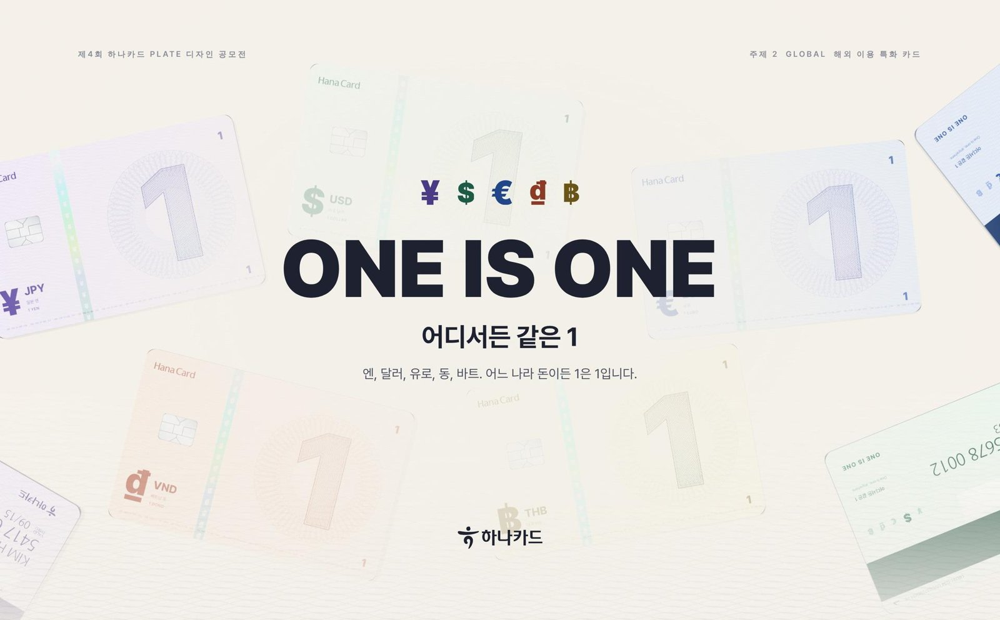
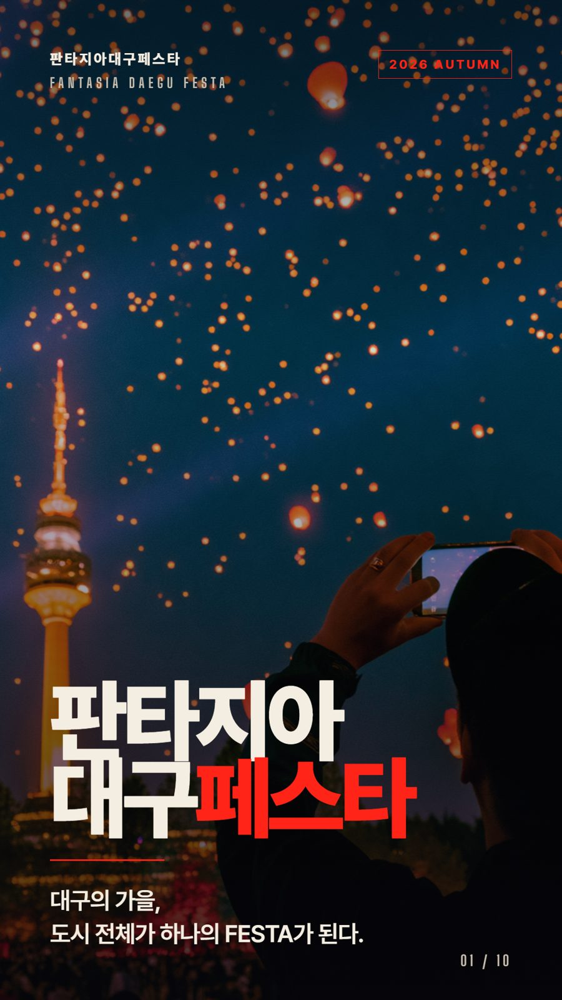
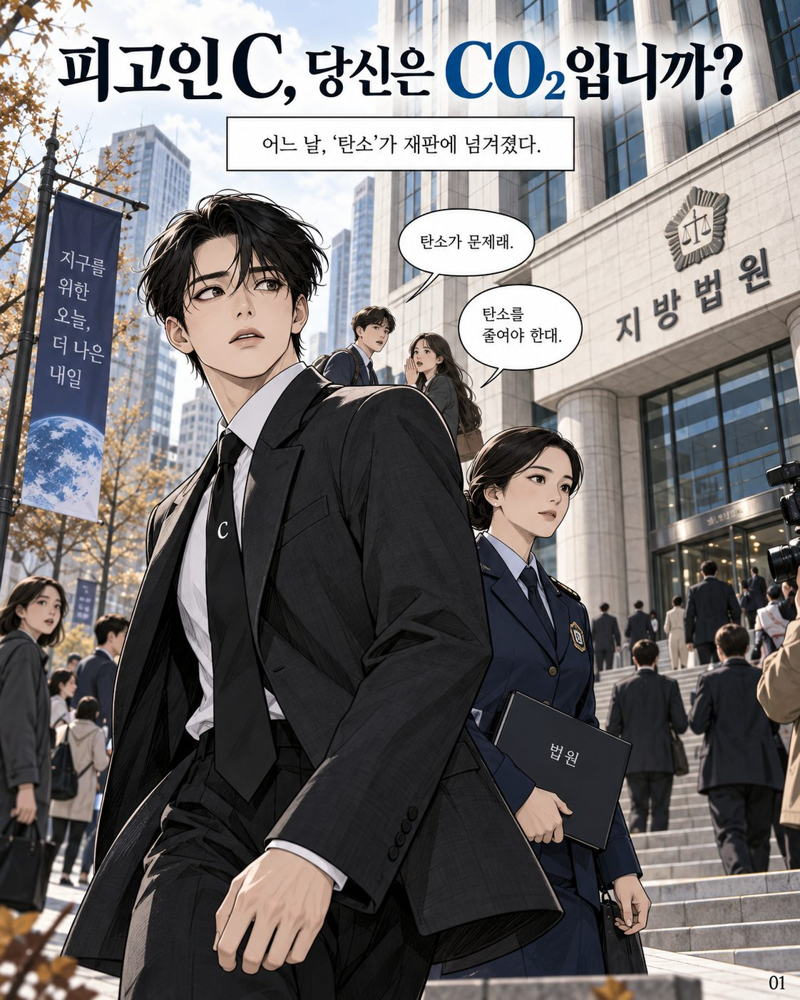
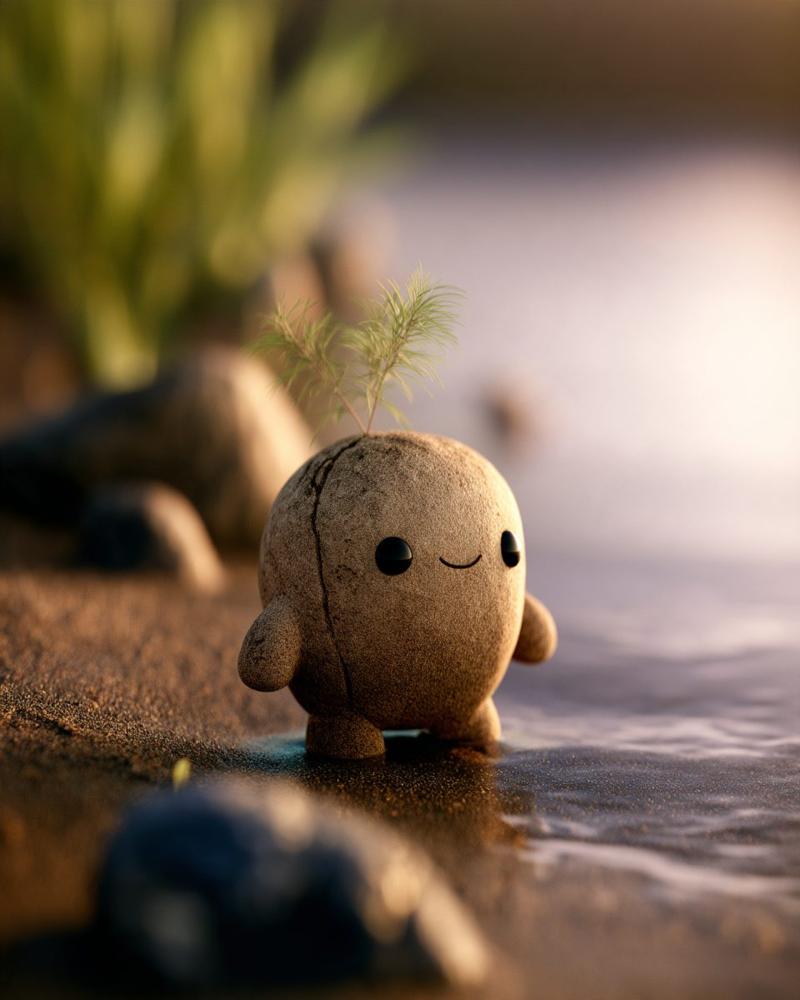

2026년 10월 제출, 결과 대기 중입니다. 기획 의도·대사·규격·금지 사항(과장 수치, 로고, 악당화)을 지시문으로 고정하고 선행 컷을 참조 이미지로 넘겨 화풍 연속성을 유지했으며, AI 활용 범위와 직접 수행 범위를 제출 문서에 구분해 적었습니다.
제4회 하나카드 plate 디자인 — ONE IS ONE. 통화가 달라도 "같은 1"이라는 콘셉트로 엔·달러·유로·동·바트 5종 카드와 상세페이지를 만들었습니다. 판타지아 대구페스타 카드뉴스 — 9개 축제, 하나의 이름. 블랙+레드 타이포 10장입니다. 탄소소재 이미지 부문(KNU팀) — 《피고인 C, 당신은 CO₂입니까?》. CO₂로 오해받아 법정에 선 원소 C가 탄소섬유·흑연·활성탄·카본블랙 증인과 함께 정체를 밝히는 10컷 법정 코미디 웹툰으로, 원소와 화합물의 차이를 선악 구도 없이 설명합니다. 낙동강 캐릭터 공모전 — 흙과 새싹 캐릭터 "톨이" 6컷 포즈 시트입니다.



